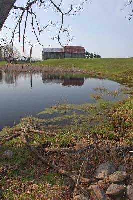

|
The ducks come back to Woolley Wonderland Farm. Some ducks are in very high demand and are purchased by clients right away. When a client buys a duck from us, it is not up to us, to say what happens to that bird. 
Some of the ducks stay with us to “grow out” and fully feather so we can assess them for our breeding program.. When things are “normal” in non isolating times, Critter Visits will be on the road with our Farm Critters for events, parties and school visits. We take many ducks along with our other miniature farm friends. Kids of all ages (that’s grown-ups too) get to hold and cuddle the animals. Your ducks may be part of that collection with our team on the road. We know you’ll have a duckie time and build joyful memories during your time with our feathered friends. We would love for you to get to meet them again when they've grown!
They may live out their life on another farm or possibly be a choice meal for a restaurant or a special dinner at a wedding supper. We cannot determine the final purpose of every duck.
While they are on our farm, we provide them with a super life with our pond and other friends to swim and play with.
|